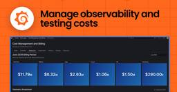
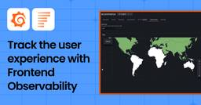

Grafana Labs blog on Grafana Labs
https://grafana.com/blog/
News, announcements, articles, metrics & monitoring love...
フィード
A new allowlists design for Grafana Cloud IP addresses: What you need to know
Grafana Labs blog on Grafana Labs
If your network restricts inbound or outbound traffic, you likely maintain an allowlist of Grafana Cloud IP addresses so your systems and Grafana Cloud can talk to each other. Today we're introducing a new allowlists design: a single, structured API that replaces the collection of per-product lists we've published until now.If you don't use IP allowlisting—or you connect to Grafana Cloud over private connectivity such as AWS PrivateLink—nothing changes for you, and no action is needed. If you do use IP allowlisting, please read on to learn what’s changing, how to update your URLs, and how to test your automations for your migration. All the legacy per-product formats—the JSON lists, their .txt equivalents, and the src-ips..grafana.net DNS records—will continue to work and stay up to date until January 31, 2027 to allow for your teams to properly plan and execute your migration. If you have any issues or questions about this update, please reach out to the Grafana Labs support team.What
21時間前
How to monitor your Supabase projects: connect Grafana Cloud in one click
Grafana Labs blog on Grafana Labs
As AI agents accelerate software development and spin up applications at scale, visibility into what's happening behind the scenes, including query performance and database health, has never been more important. Gaining that level of insight requires observability that can keep pace. Supabase and Grafana Labs have partnered to launch a new integration available directly in Supabase, bringing production-grade observability to Supabase projects with a single click. Supabase users can now activate Grafana Cloud directly from their Supabase Dashboard to access key Supabase and Postgres metrics for their apps. With an out-of-the-box Grafana Cloud dashboard, you can track performance, identify issues, and understand system health from day one, knowing your monitoring and development will always stay in sync as you iterate. "We rely on Grafana for observing our production systems internally and are excited to make it seamless for Supabase users to get the same deep insights into their product
1日前

Cost attribution in Grafana Cloud: Manage spend across observability and testing workflows
Grafana Labs blog on Grafana Labs
Knowing what you're spending on observability is useful. Knowing which team, service, or project is driving that spend is what actually lets you act on that information. Cost attribution is a core part of how Grafana Cloud approaches cost management and optimization. It gives your organization a clear, structured way to allocate observability spend across teams, projects, and services, turning a single consolidated bill into a meaningful breakdown that builds accountability and supports internal billing models like chargeback and showback. Grafana Cloud already supported cost attribution for metrics, logs, and traces. More recently, we extended that support to Grafana Cloud Synthetic Monitoring and performance testing with Grafana Cloud k6. This gives you deep visibility into testing costs and a consistent way to attribute spend across both your observability and testing workflows. Whether it's a spike in check executions or a load test that ran longer than planned, you can now trace t
2日前

Beyond performance monitoring: Understand the user experience with Grafana Cloud Frontend Observability
Grafana Labs blog on Grafana Labs
You've optimized your Largest Contentful Paint. Your Time to First Byte is under 200ms. Your Lighthouse scores are green. And yet, your checkout conversion rate is quietly dropping. A segment of users in Southeast Asia is churning. Your support team is fielding tickets about a form that "just doesn't work" and you have no idea which one.Traditional frontend performance monitoring tells you whether your application is fast. It doesn't tell you whether people are actually succeeding when using it. It can't reveal which workflows are failing, which user segments are affected, or whether a JavaScript error is quietly preventing customers from completing the actions that matter most. We think of this as the user experience: whether people can successfully accomplish the tasks they came to your application to perform. That's the visibility Grafana Cloud Frontend Observability is built to provide. In this post, we'll explore how Frontend Observability helps you understand your users' experien
4日前
ObservabilityCON 2026: Register today and preview this year's agenda
Grafana Labs blog on Grafana Labs
This fall, prepare to leave your heart in San Francisco. Registration is officially open for ObservabilityCON 2026, our flagship observability event that’s taking place from October 19-21 at Pier 27 in San Francisco.Whether you're building in a local environment or operating agentic workflows in production, ObservabilityCON brings together all the latest innovations, thought leaders, and experts to help you (and your agents) navigate the fast-moving AI era.Learn tips and tricks from interactive demos and hands-on workshops, and get actionable advice to advance your observability strategy.You can register now to secure early bird pricing, which is 50% off the standard ticket price. Quantities are limited, and tickets will go fast, so reserve your spot today!What’s happening at ObservabilityCON 2026We’re offering a sneak peak into the packed agenda for ObservabilityCON 2026. We are excited about everything we have in store—with more talks to be announced soon. Here’s a closer look.Hands-
8日前

Grafana Labs named a Leader again in the 2026 Gartner® Magic Quadrant™ for Observability Platforms
Grafana Labs blog on Grafana Labs
We’re delighted to share that Grafana Labs has been named a Leader in the Gartner® Magic Quadrant™ for Observability Platforms for the third consecutive year.Notably, we’re also positioned furthest in “Completeness of Vision” for the second year in a row.We’re proud of this recognition and think it reflects what we consistently hear from our users: AI is rapidly changing the observability landscape, and teams need an open and flexible platform that can help them navigate that change. Reducing complexity in the age of AIAccording to Grafana Labs’ 2026 Observability Survey, operational complexity and overhead are the top observability challenges for organizations around the world. While AI is creating new opportunities for automation and insight, it’s also reshaping the systems teams need to operate. Telemetry volumes keep growing, systems are increasingly distributed, and organizations are managing more data, more dependencies, and new points of failure that can be difficult to detect a
9日前
Stop switching tools to find answers: Grafana Assistant now works across 30+ data sources
Grafana Labs blog on Grafana Labs
When you're the on-call engineer and something breaks, you can quickly find yourself deep in a series of tools you don't regularly use—switching tabs, copying query results, and manually stitching together a picture of what's happening and why.People are increasingly turning to AI to get around this, but the results can be a mixed bag.For example, many of today's observability, data warehousing, or project management tools come equipped with powerful AI assistants that can help you get answers quicker. But those assistants can only see the data they were built on top of. Alternatively, you could extend the AIs through MCPs or built-in integrations, but those connections don't configure or maintain themselves. As a result, AI that is designed to reduce the cognitive load of juggling multiple tools ends up adding another silo to an already fragmented stack. We think there's a better way.At Grafana Labs, we've always had a "big tent" philosophy. You don’t have to migrate your data or stan
10日前
Building an end-to-end reliability testing strategy with Grafana Cloud
Grafana Labs blog on Grafana Labs
Modern applications can fail in many different ways, from performance regressions and frontend errors to systems that break under heavy load. Because no single testing or monitoring approach can catch every type of failure, effective reliability testing requires multiple layers that validate your application before, during, and after their release. In this post, we'll look at how three solutions in Grafana Cloud—Synthetic Monitoring, Frontend Observability, and k6—work together to form a comprehensive reliability testing strategy. While no single tool tells the whole story, layered together they close gaps and prevent failures from slipping through undetected.To show how you can use these three solutions together, we'll walk through an example using QuickPizza, a simple demo web application that generates pizza combinations.The Swiss Cheese Model: why one tool isn’t enough for reliability testing There's a well-known framework in risk management called the Swiss Cheese Model. It was or
11日前
'Grafana's Big Tent' podcast: Anthropic on agentic coding, observability, and the future of software engineering
Grafana Labs blog on Grafana Labs
In this episode of "Grafana's Big Tent" podcast, hosts Mat Ryer, Senior Director of AI at Grafana Labs, and Tom Wilkie, CTO at Grafana Labs, sit down with Eric Burns, Field Executive Architect at Anthropic, to talk about why Anthropic bet early on running across every major cloud, what it's like watching a technology go from "interesting" to "obviously inevitable" in real time, and how agentic coding tools have changed the day-to-day of building software at Grafana Labs.You can watch the full episode in the YouTube video below, or listen on Spotify or Apple Podcasts.Note: The following are highlights from episode 9, season 3 of "Grafana's Big Tent" podcast. The transcript below has been edited for length and clarity.Why Anthropic bet on being everywhere, not just one cloudTom Wilkie: We're a pretty big fan of Anthropic models. We do use models from other vendors. I've heard they exist. But I think one of the things that attracted us to the Anthropic models was the availability. We run
14日前
Business intelligence plugins for Grafana: A support update
Grafana Labs blog on Grafana Labs
In January, we announced that Grafana Labs had assumed maintenance of the business intelligence (BI) plugins created by Volkov Labs, and committed to a six-month maintenance period. Today, we’re sharing an update: we're extending our maintenance commitment through the end of 2026. As announced earlier this year, that commitment includes maintaining compatibility with recent Grafana releases while handling bug fixes, security updates, and community contributions on a best-effort basis.We want to be transparent about why we’re extending the maintenance period, what we've learned over the past several months, and how we're thinking about support going forward.A quick look back—and where things standIn September 2025, our longtime partner Volkov Labs announced they had been acquired. In light of the news, we committed in January 2026 to taking over the maintenance and development of their popular BI plugin suite to ensure continuity for the Grafana community. Since then, we've made signifi
15日前